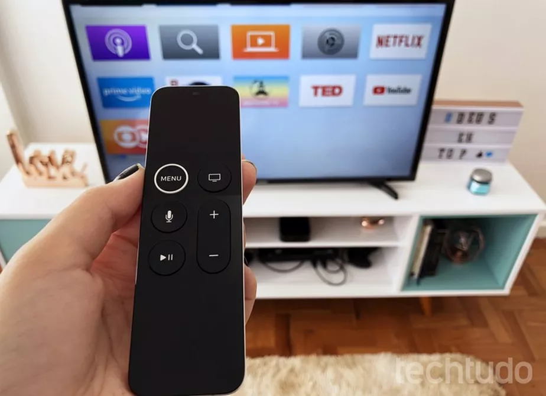

Controle da Apple TV: descubra 5 funções pouco conhecidas
postado em 27/08/2022 Atalhos simples facilitam o uso do dispositivo da Apple. É possível acessar ajustes, avançar o conteúdo ou ativar rapidamente a proteção de tela.
Leia maisJBL Wave 300TWS é bom? Veja preço e ficha técnica do fone de ouvido
postado em 23/08/2022O fone de ouvido da JBL foi lançado no primeiro trimestre de 2022 e promete até 26 horas de autonomia. Conheça o Wave 300TWS, sua ficha técnica e preços no Brasil.
Leia maisOLED vs QLED: entenda as diferenças entre os tipos de telas de TV
postado em 13/08/2022
As tecnologias dominam o mercado de TVs intermediárias e premium, mas têm diferenças pontuais entre elas. Conheça os padrões OLED e QLED e veja qual é o ideal para você.
Leia mais
Todos os direitos reservados